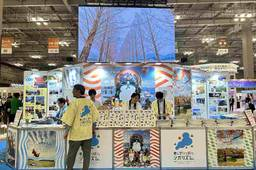
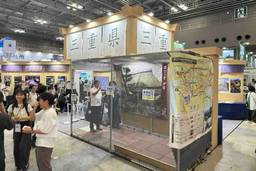
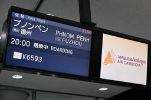
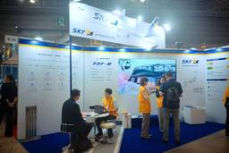
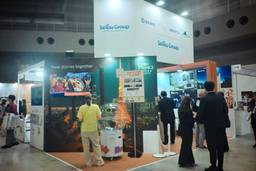
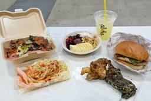

TRAICY（トライシー）
https://www.traicy.com/
TRAICY（トライシー）は、航空・LCC・鉄道・ホテル・ゲストハウス・バックパッカーズの最新情報を発信している、日本最大級のトラベルメディアです。
フィード

JTB、ボストンバッグなどが当たるクイズラリーを実施【ツーリズムEXPO2026】
TRAICY（トライシー）
JTB（ジェイティービー）は、東京・有明の東京ビックサイトで開催中の「ツーリズムEXPOジャパン2026」にブースを出展している。 ブースは東2ホール、X-06。ブース内で事業内容の紹介を行っているほか、ステージでは様々 […]投稿 JTB、ボストンバッグなどが当たるクイズラリーを実施【ツーリズムEXPO2026】 は TRAICY（トライシー） に最初に表示されました。
5時間前
Fairfield By Marriott、宿泊券やオリジナルグッズが当たる抽選会を実施【ツーリズムEXPO2026】
TRAICY（トライシー）
フェアフィールド・バイ・マリオットは、東京・有明の東京ビックサイトで開催中の「ツーリズムEXPOジャパン2026」にブースを出展している。 事業の紹介映像を放映しているほか、Instagramまたは公式LINEの追加で参 […]投稿 Fairfield By Marriott、宿泊券やオリジナルグッズが当たる抽選会を実施【ツーリズムEXPO2026】 は TRAICY（トライシー） に最初に表示されました。
6時間前
SHKライングループなど海事14団体、船舶や航路などを紹介 乗船券が当たる抽選会も【ツーリズムEXPO2026】
TRAICY（トライシー）
海運事業を行う14団体は、東京・有明の東京ビックサイトで開催中の「ツーリズムEXPOジャパン2026」にブースを出展している。 各会社の職員が集結し、すでに就航している船舶や新造船の紹介をそれぞれのブースで行なっているほ […]投稿 SHKライングループなど海事14団体、船舶や航路などを紹介 乗船券が当たる抽選会も【ツーリズムEXPO2026】 は TRAICY（トライシー） に最初に表示されました。
6時間前
HIS、首都圏発「海外旅行タイムセール」開催中 9月28日正午まで
TRAICY（トライシー）
エイチ・アイ・エス（HIS）は、首都圏発の「海外旅行タイムセール」を9月25日から28日正午まで開催している。 航空券＋ホテルを同時購入すると、10月から12月宿泊分のホテル代が最大50％オフとなる。 東京/成田・東京/ […]投稿 HIS、首都圏発「海外旅行タイムセール」開催中 9月28日正午まで は TRAICY（トライシー） に最初に表示されました。
9時間前
西武鉄道、「レッドアロークラシック」を期間限定で復活 10月4日から運行
TRAICY（トライシー）
西武鉄道は、10000系「ニューレッドアロー」に初代特急5000系「レッドアロー」の塗装色を施した「レッドアロークラシック」を、10月4日から期間限定で運行する。 「西武グループ昭和100年SPECIAL PROJECT […]投稿 西武鉄道、「レッドアロークラシック」を期間限定で復活 10月4日から運行 は TRAICY（トライシー） に最初に表示されました。
9時間前
スターラックス航空、A350-1000「STARLUX AIRSORAYAMA」機内サービス品展示など【ツーリズムEXPO2026】
TRAICY（トライシー）
スターラックス航空は、東京・有明の東京ビックサイトで開催中の「ツーリズムEXPOジャパン2026」にブースを出展している。 ブースでは、10月1日に正式就航する特別塗装機「STARLUX AIRSORAYAMA」（エアバ […]投稿 スターラックス航空、A350-1000「STARLUX AIRSORAYAMA」機内サービス品展示など【ツーリズムEXPO2026】 は TRAICY（トライシー） に最初に表示されました。
10時間前
中国、VR体験やガラポンを実施【ツーリズムEXPO2026】
TRAICY（トライシー）
中国駐東京観光代表処は、東京・有明の東京ビックサイトで開催中の「ツーリズムEXPOジャパン2026」にブースを出展している。 ブースはホール2、G-12。VR体験では、シルクロード、成都グルメ、四川省、北京、張家界などの […]投稿 中国、VR体験やガラポンを実施【ツーリズムEXPO2026】 は TRAICY（トライシー） に最初に表示されました。
10時間前

滋賀県、ガラポン抽選会を実施 特製グッズ【ツーリズムEXPO2026】
TRAICY（トライシー）
滋賀県は、東京・有明の東京ビックサイトで開催中の「ツーリズムEXPOジャパン2026」にブースを出展している。 ブースはホール7、M-08。ガラポン抽選会では、パ酒ポート＋滋賀の地酒セット、西川貴教さんアクリルスタンド、 […]投稿 滋賀県、ガラポン抽選会を実施 特製グッズ【ツーリズムEXPO2026】 は TRAICY（トライシー） に最初に表示されました。
10時間前
大阪府・勝尾寺、重ね押しスタンプラリーやおみくじを実施【ツーリズムEXPO2026】
TRAICY（トライシー）
大阪府・勝尾寺は、東京・有明の東京ビックサイトで開催中の「ツーリズムEXPOジャパン2026」にブースを出展している。 ブースはホール7、M-12。重ね押しスタンプラリーでは、各スタンプ台を回ることで一つの絵が完成する。 […]投稿 大阪府・勝尾寺、重ね押しスタンプラリーやおみくじを実施【ツーリズムEXPO2026】 は TRAICY（トライシー） に最初に表示されました。
10時間前

JALグループ、台風26号で特別対応 9月28日〜29日の南西諸島発着便
TRAICY（トライシー）
日本航空（JAL）グループは、台風26号の接近による悪天候が見込まれるため、航空券の特別対応を実施する。 9月25日午後3時現在、特別対応を実施するのは、9月28日に喜界島・徳之島・沖永良部・与論、9月28日から29日に […]投稿 JALグループ、台風26号で特別対応 9月28日〜29日の南西諸島発着便 は TRAICY（トライシー） に最初に表示されました。
10時間前
奈良県、射的ゲームや抽選会を実施【ツーリズムEXPO2026】
TRAICY（トライシー）
奈良県は、東京・有明の東京ビックサイトで開催中の「ツーリズムEXPOジャパン2026」にブースを出展している。 ブースはホール7、M-21。奈良県大河ドラマ「豊臣兄弟！」観光推進協議会が、鎧の展示、SNSフォローで参加で […]投稿 奈良県、射的ゲームや抽選会を実施【ツーリズムEXPO2026】 は TRAICY（トライシー） に最初に表示されました。
11時間前
新潟県、ガチャやサイコロゲームを実施【ツーリズムEXPO2026】
TRAICY（トライシー）
新潟県は、東京・有明の東京ビックサイトで開催中の「ツーリズムEXPOジャパン2026」にブースを出展している。 ブースはホール7、K-27。SNSをフォローすると、サイコロゲームや缶バッジ釣り、ガチャに挑戦できる。ガチャ […]投稿 新潟県、ガチャやサイコロゲームを実施【ツーリズムEXPO2026】 は TRAICY（トライシー） に最初に表示されました。
11時間前
沖縄県、伝統・文化をテーマに出店 空手・エイサーのステージも【ツーリズムEXPO2026】
TRAICY（トライシー）
沖縄県と沖縄観光コンベンションビューローは、東京・有明の東京ビックサイトで開催中の「ツーリズムEXPOジャパン2026」にブースを出展している。 ブースは東8ホール、S-12。「沖縄の伝統・文化」をテーマに、空手の演武や […]投稿 沖縄県、伝統・文化をテーマに出店 空手・エイサーのステージも【ツーリズムEXPO2026】 は TRAICY（トライシー） に最初に表示されました。
11時間前
ソウル観光財団、エンタメ・ランドマーク・文化体験をテーマに出展 キーホルダー作り体験も【ツーリズムEXPO2026】
TRAICY（トライシー）
ソウル観光財団は、東京・有明の東京ビックサイトで開催中の「ツーリズムEXPOジャパン2026」にブースを出展している。 ブースは東2ホール、G-35「Seoul: Day and Night（昼も夜もソウル）」をテーマに […]投稿 ソウル観光財団、エンタメ・ランドマーク・文化体験をテーマに出展 キーホルダー作り体験も【ツーリズムEXPO2026】 は TRAICY（トライシー） に最初に表示されました。
11時間前

三重県、伊勢志摩や伊賀流忍者をテーマに出展 手裏剣投げ体験も【ツーリズムEXPO2026】
TRAICY（トライシー）
三重県は、東京・有明の東京ビックサイトで開催中の「ツーリズムEXPOジャパン2026」にブースを出展している。 ブースは東7ホール、L-15。伊勢志摩、伊賀流忍者、地域の魅力をテーマに、地酒やジュースの試飲、銘菓の試食、 […]投稿 三重県、伊勢志摩や伊賀流忍者をテーマに出展 手裏剣投げ体験も【ツーリズムEXPO2026】 は TRAICY（トライシー） に最初に表示されました。
12時間前
近畿日本鉄道、新観光列車「Les Saveurs 志摩」の座席体験など【ツーリズムEXPO2026】
TRAICY（トライシー）
近畿日本鉄道は、東京・有明の東京ビックサイトで開催中の「ツーリズムEXPOジャパン2026」にブースを出展している。 ブースでは、11月1日から運行を開始するレストラン列車「Les Saveurs 志摩（レ・サヴール・し […]投稿 近畿日本鉄道、新観光列車「Les Saveurs 志摩」の座席体験など【ツーリズムEXPO2026】 は TRAICY（トライシー） に最初に表示されました。
12時間前
福島県、赤べこ展示やガチャを実施【ツーリズムEXPO2026】
TRAICY（トライシー）
福島県は、東京・有明の東京ビックサイトで開催中の「ツーリズムEXPOジャパン2026」にブースを出展している。 ブースはホール7、J-03、J-05、J-07。会津磐梯スノーリゾート形成計画推進協議会のブースでは、アンケ […]投稿 福島県、赤べこ展示やガチャを実施【ツーリズムEXPO2026】 は TRAICY（トライシー） に最初に表示されました。
12時間前
トラベーション、西園寺さん・ZAKIさんの“限界旅行”当たるガチャなど【ツーリズムEXPO2026】
TRAICY（トライシー）
トラベーションは、東京・有明の東京ビックサイトで開催中の「ツーリズムEXPOジャパン2026」にブースを出展している。 ブースには、旅行系YouTuberの西園寺さん、ZAKIさんのアクリルスタンドと、くじ券が入った「旅 […]投稿 トラベーション、西園寺さん・ZAKIさんの“限界旅行”当たるガチャなど【ツーリズムEXPO2026】 は TRAICY（トライシー） に最初に表示されました。
12時間前

ANA、台風26号で特別対応 9月27日〜28日の沖縄/那覇発着便
TRAICY（トライシー）
全日本空輸（ANA）は、台風26号の影響が見込まれるため、航空券の特別対応を実施する。 9月26日午前11時30分現在、特別対応を実施するのは、9月27日から28日にかけて沖縄/那覇を発着する便。 対象便の航空券は実際の […]投稿 ANA、台風26号で特別対応 9月27日〜28日の沖縄/那覇発着便 は TRAICY（トライシー） に最初に表示されました。
12時間前
エア・カナダ、ホーチミン就航へ 2027年にも
TRAICY（トライシー）
エア・カナダは、2027年にもホーチミンへ就航する。 カナダとベトナム間の航空輸送協定を拡大し、週最大14往復の旅客便と週最大7往復の貨物便の運航を可能とする。貨物便に対する以遠権も認める。ベトナムのトー・ラム書記長兼国 […]投稿 エア・カナダ、ホーチミン就航へ 2027年にも は TRAICY（トライシー） に最初に表示されました。
14時間前
トキエア、「秋旅収穫祭」第2弾開催 片道6,600円から
TRAICY（トライシー）
トキエアは、「第2弾 秋旅タイムセール～秋旅収穫祭～」を9月25日正午から10月28日まで開催する。 トキエア全路線が対象で、対象便限定となる。片道運賃は平日が6,600円から、土・日・祝日が8,800円から。旅客施設使 […]投稿 トキエア、「秋旅収穫祭」第2弾開催 片道6,600円から は TRAICY（トライシー） に最初に表示されました。
14時間前
スカンジナビア航空、コペンハーゲンに新ラウンジを開設へ 2027年6月オープン
TRAICY（トライシー）
スカンジナビア航空は、コペンハーゲン空港に新たなフラッグシップラウンジを、2027年6月に開設する。 ラウンジはターミナル3の4階に位置し、面積は3,700平方メートル。現在のラウンジより約40％広くなる。1日最大4,0 […]投稿 スカンジナビア航空、コペンハーゲンに新ラウンジを開設へ 2027年6月オープン は TRAICY（トライシー） に最初に表示されました。
14時間前

エア・カンボジア、東京/成田〜福州〜プノンペン線の増便延期 12月15日から週5往復
TRAICY（トライシー）
エア・カンボジアは、東京/成田〜福州〜プノンペン線の増便を12月15日に延期する。当初は10月25日から増便する計画だった。 現在は水・金・日曜の週3往復を運航しており、これに火・土曜の運航を加え、週5往復とする。機材は […]投稿 エア・カンボジア、東京/成田〜福州〜プノンペン線の増便延期 12月15日から週5往復 は TRAICY（トライシー） に最初に表示されました。
14時間前
熊本市、地酒の試飲や手湯を実施【ツーリズムEXPO2026】
TRAICY（トライシー）
熊本市は、東京・有明の東京ビックサイトで開催中の「ツーリズムEXPOジャパン2026」にブースを出展している。 ブースはホール7、Q-07。ブースには地酒の試飲や植木温泉の手湯、武将隊とのグリーティングを用意している。熊 […]投稿 熊本市、地酒の試飲や手湯を実施【ツーリズムEXPO2026】 は TRAICY（トライシー） に最初に表示されました。
16時間前

スカイマーク、往復航空券が当たるアンケートなど実施【ツーリズムEXPO2026】
TRAICY（トライシー）
スカイマークは、東京・有明の東京ビックサイトで開催中の「ツーリズムEXPOジャパン2026」にブースを出展している。 ブースは東7ホール、K-21。6月から東京/羽田〜福岡線などで運航しているボーイング737-8型機の紹 […]投稿 スカイマーク、往復航空券が当たるアンケートなど実施【ツーリズムEXPO2026】 は TRAICY（トライシー） に最初に表示されました。
16時間前
石川県、地酒や銘菓の試飲・試食を提供 ひゃくまんさんも登場【ツーリズムEXPO2026】
TRAICY（トライシー）
石川県と石川県観光連盟は、東京・有明の東京ビックサイトで開催中の「ツーリズムEXPOジャパン2026」にブースを出展している。 ブースはホール東7、L-10。中央には行灯風のシンボルタワーを据え、兼六園の雪吊りをイメージ […]投稿 石川県、地酒や銘菓の試飲・試食を提供 ひゃくまんさんも登場【ツーリズムEXPO2026】 は TRAICY（トライシー） に最初に表示されました。
17時間前
沖縄本島周辺15離島、島名キーホルダーをプレゼント【ツーリズムEXPO2026】
TRAICY（トライシー）
沖縄観光コンベンションビューローは、沖縄本島周辺15離島の観光協会と共同で、東京・有明の東京ビックサイトで開催中の「ツーリズムEXPOジャパン2026」にブースを出展している。 ブースは東8ホール、S-04。沖縄本島周辺 […]投稿 沖縄本島周辺15離島、島名キーホルダーをプレゼント【ツーリズムEXPO2026】 は TRAICY（トライシー） に最初に表示されました。
17時間前

西武グループ、プリンスホテルや「52席の至福」利用券などが当たる抽選会を実施【ツーリズムEXPO2026】
TRAICY（トライシー）
西武グループは、東京・有明の東京ビックサイトで開催中の「ツーリズムEXPOジャパン2026」にブースを出展している。 ブースは東8ホール、V-05。西武グループで展開している事業や沿線での楽しみ方を映像で案内している。ま […]投稿 西武グループ、プリンスホテルや「52席の至福」利用券などが当たる抽選会を実施【ツーリズムEXPO2026】 は TRAICY（トライシー） に最初に表示されました。
18時間前

「ツーリズムEXPOジャパン2026」、世界・日本各地の料理が楽しめる売店が出店中
TRAICY（トライシー）
東京・有明の東京ビックサイトで開催中の「ツーリズムEXPOジャパン2026」で、世界・日本各地の料理が楽しめるキッチンカーや売店が出店している。 ブースは東1、東3、東7、東8ホールの4か所に分かれている。東1ホールでは […]投稿 「ツーリズムEXPOジャパン2026」、世界・日本各地の料理が楽しめる売店が出店中 は TRAICY（トライシー） に最初に表示されました。
19時間前
内房線・木更津〜安房鴨川駅間の運転再開 一部線区では復旧に相当の時間
TRAICY（トライシー）
JR東日本は、内房線の木更津〜安房鴨川駅間の運転を、9月26日始発から再開する。 台風25号の影響によって、土砂流入、線路冠水、倒木などの被害が広範囲で確認されており、一部の線区では運転再開まで相当の時間を要する見込み。 […]投稿 内房線・木更津〜安房鴨川駅間の運転再開 一部線区では復旧に相当の時間 は TRAICY（トライシー） に最初に表示されました。
19時間前